2 Fused Lasso CV
2.1 Error plots
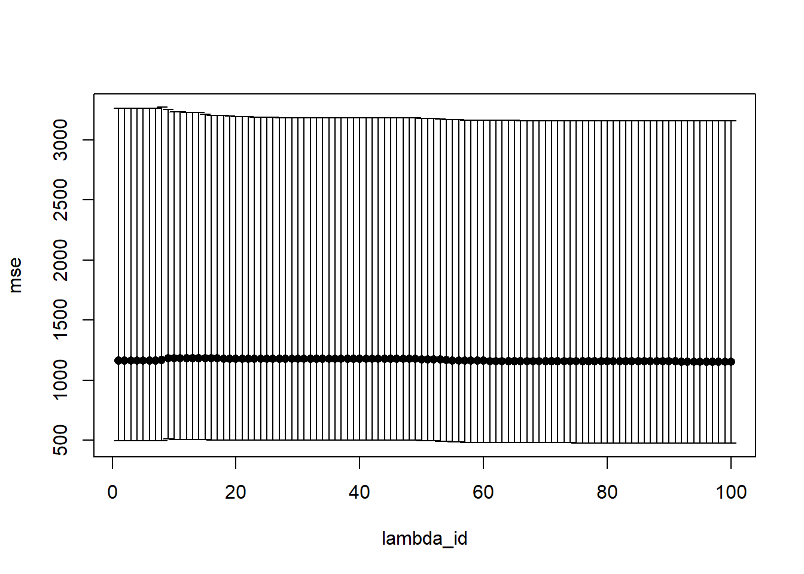
The plot shows the results from the 5 fold-CV plotted for each lambda. Lambda values start with high regularization and then decrease. Initially reducing regularization reduces the error until the 43th lambda value. As the errors get very large after the 60th lambda value and strictly increase we only showed the first 60 values for better visibility The highest regularization is chosen so that all coefficients are zero.
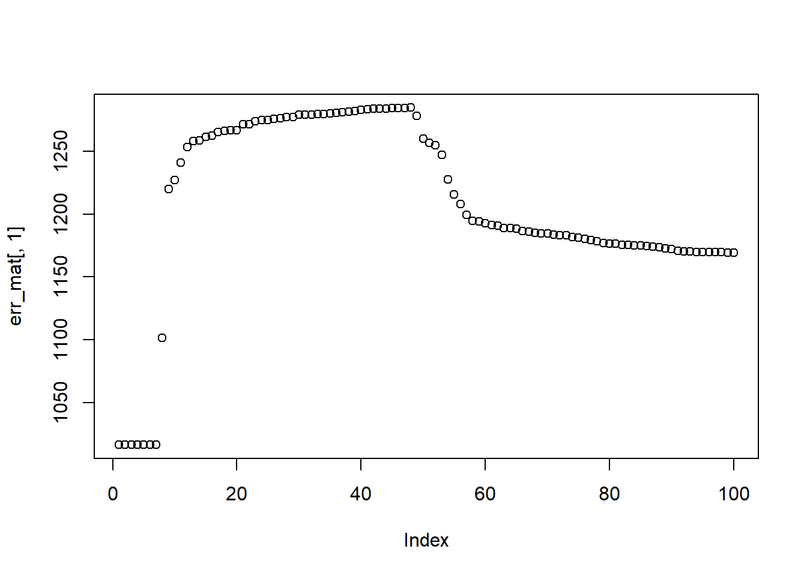
Below we can see the minimum MSE for each fold.
## [1] 1016.2804 2001.8214 1028.4894 897.3116 665.6149And which lambda in the lambda vector resulted in the lowest prediction error on the folds´ test set.
## [1] 1 100 100 100 12.2 Coefficient plots
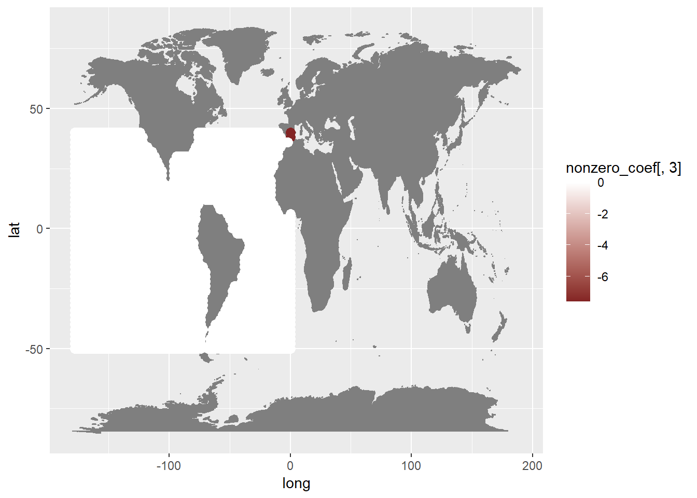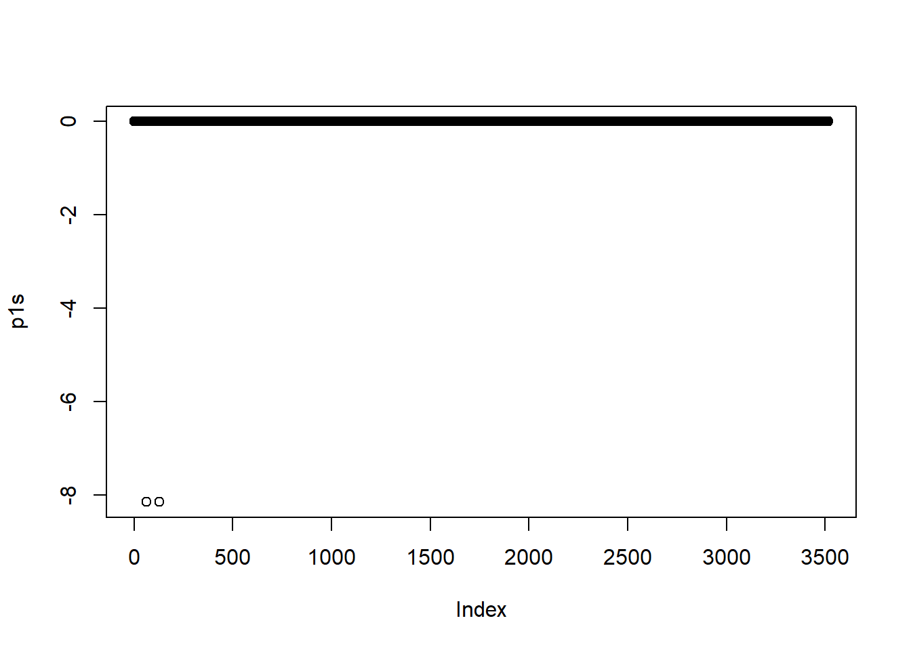
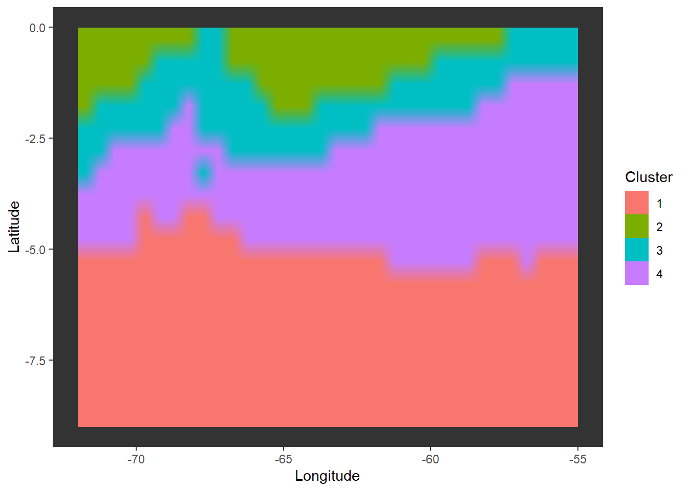
## [1] -7.589664229 0.006429624##
## -7.59 0.006
## 2 3514
## [1] -7.589664229 0.006429624##
## -7.59 0.006
## 2 3514## [1] -7.589664229 0.006429624##
## -7.59 0.006
## 2 3514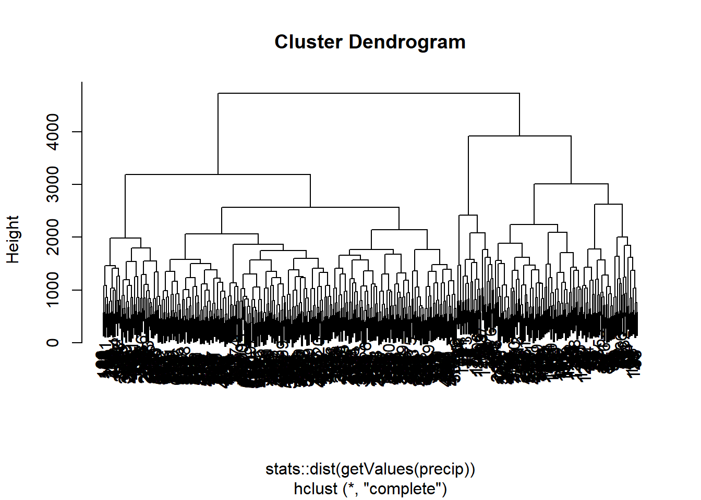
## [1] -7.589664229 0.006429624##
## -7.59 0.006
## 2 35142.3 Inspect predictions from each fold
## [1] 432 3516## [1] 14 100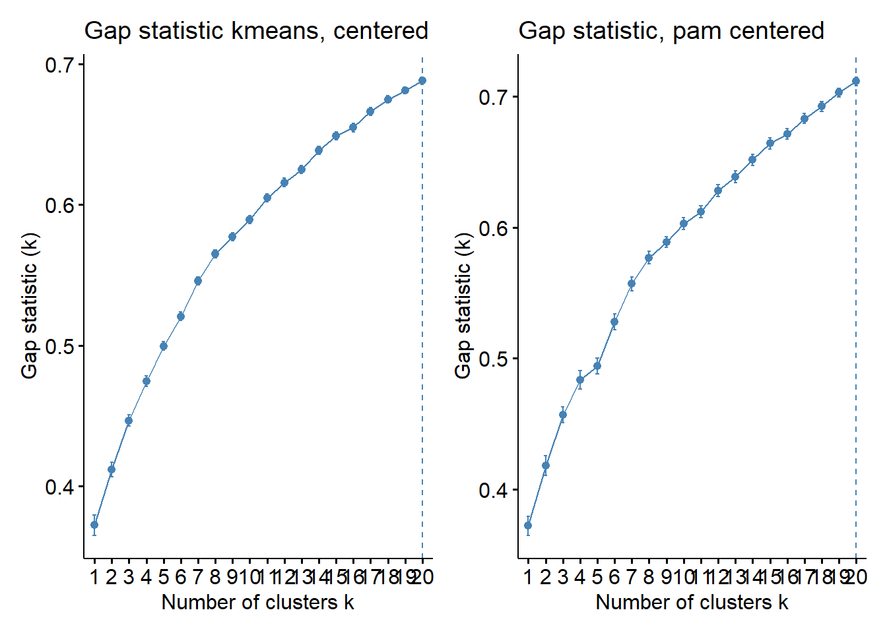
## [1] 14 100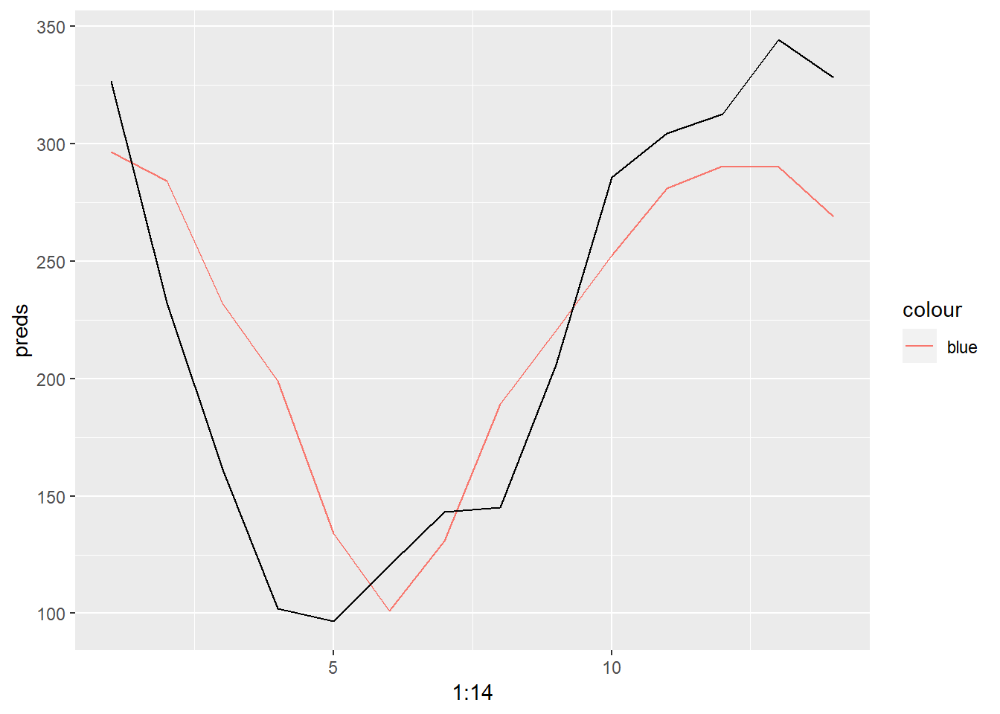
## [1] 14 100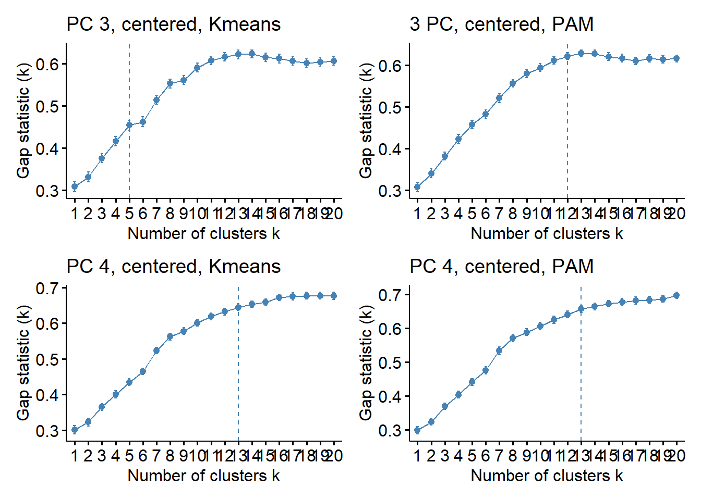 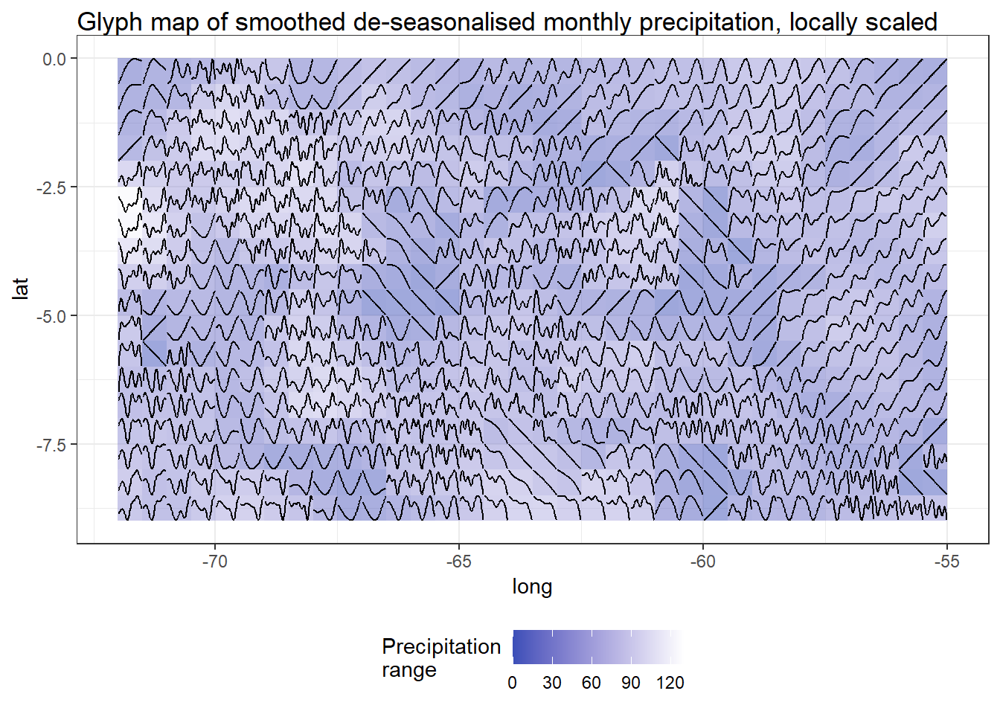
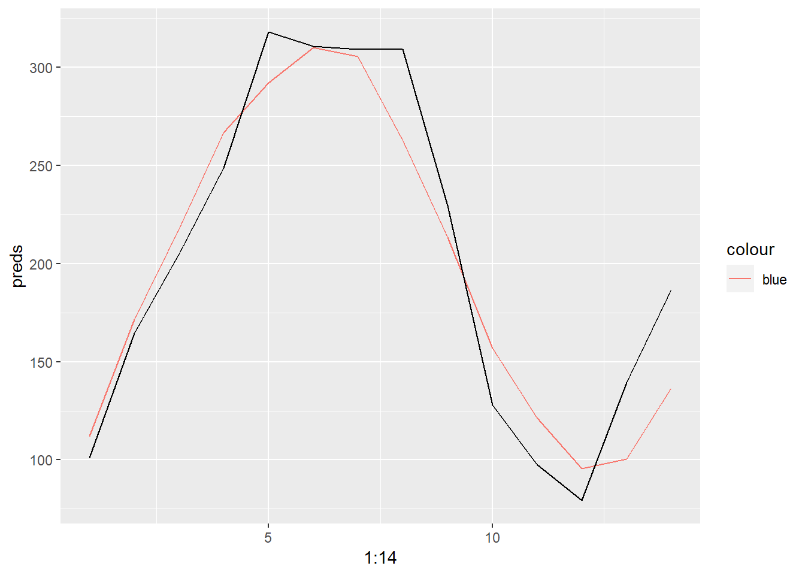
Over the more than 5 years of validation data the model predicts the seasonal pattern of the precipitation time series quite well, but constantly fails to predict the higher values of precipitation. The MSE is 1215.74 and the RSME 34.87.
2.4 Summary
We fitted a LASSO model for predicting the mean precipitation in the Central Amazon Basin and used a 5-fold blocked Cross Validation approach to find the optimal level of regularization. After training the model we evaluated its performance on a separate validation set that was not used in the training process. The model shows predicting capabilities but misses out on higher values of the precipitation target. Also although predicting seems to bring useful results, the choice of the LASSO coefficients seems somewhat arbitrary or at least not interpret able in a straightforward way.